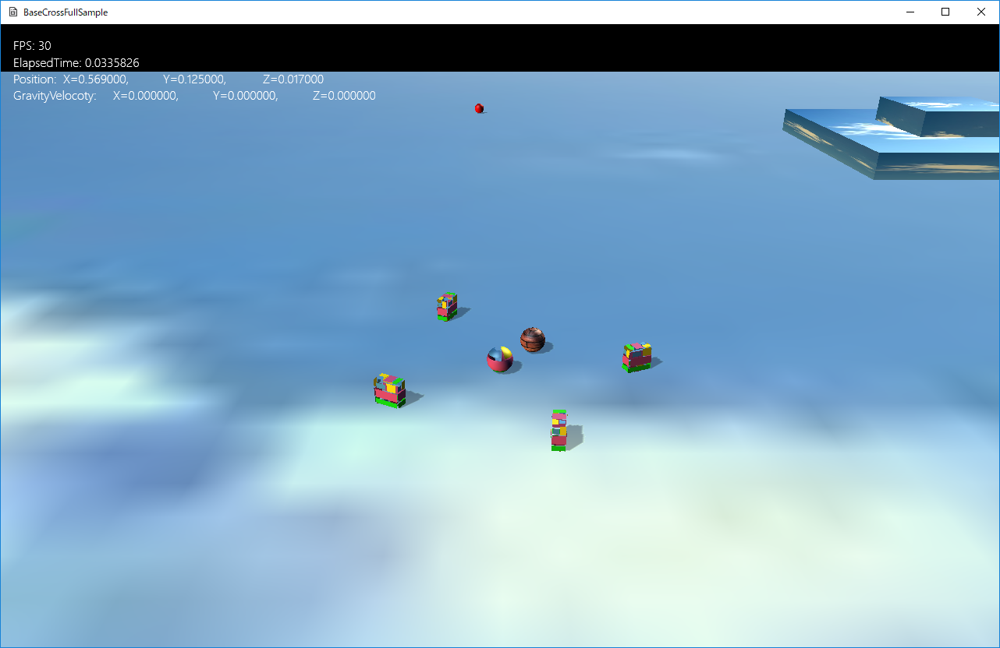

図1103a
プレイヤーを動かすと敵に見立てた複数のオブジェクトが追いかけてきたり、あるいは様子をうかがったりしています。
//--------------------------------------------------------------------------------------
/// 敵の親
//--------------------------------------------------------------------------------------
class EnemyBase : public GameObject {
Vec3 m_StartPos;
//フォース
Vec3 m_Force;
//速度
Vec3 m_Velocity;
protected:
//構築と破棄
//--------------------------------------------------------------------------------------
/*!
@brief プロテクトコンストラクタ
@param[in] StagePtr ステージ
*/
//--------------------------------------------------------------------------------------
EnemyBase(const shared_ptr<Stage>& StagePtr, const Vec3& StartPos);
//--------------------------------------------------------------------------------------
/*!
@brief プロテクトデストラクタ
*/
//--------------------------------------------------------------------------------------
virtual ~EnemyBase() {}
public:
//アクセサ
const Vec3& GetForce()const {
return m_Force;
}
void SetForce(const Vec3& f) {
m_Force = f;
}
void AddForce(const Vec3& f) {
m_Force += f;
}
const Vec3& GetVelocity()const {
return m_Velocity;
}
void SetVelocity(const Vec3& v) {
m_Velocity = v;
}
void ApplyForce();
Vec3 GetTargetPos()const;
//初期化
virtual void OnCreate() override;
//更新
virtual void OnUpdate() override;
};
//初期化
void EnemyBase::OnCreate() {
auto ptrTrans = GetComponent<Transform>();
ptrTrans->SetPosition(m_StartPos);
ptrTrans->SetScale(0.25f, 0.25f, 0.25f);
ptrTrans->SetRotation(0.0f, 0.0f, 0.0f);
//オブジェクトのグループを得る
auto group = GetStage()->GetSharedObjectGroup(L"EnemyGroup");
//グループに自分自身を追加
group->IntoGroup(GetThis<GameObject>());
//分離行動をつける
auto ptrSep = GetBehavior<SeparationSteering>();
ptrSep->SetGameObjectGroup(group);
//重力をつける
auto ptrGra = AddComponent<Gravity>();
}
//--------------------------------------------------------------------------------------
/// 敵１
//--------------------------------------------------------------------------------------
class Enemy1 : public EnemyBase {
//ステートマシーン
unique_ptr<StateMachine<Enemy1>> m_StateMachine;
//NearとFarを切り替える値
float m_StateChangeSize;
public:
//構築と破棄
//--------------------------------------------------------------------------------------
/*!
@brief コンストラクタ
@param[in] StagePtr ステージ
*/
//--------------------------------------------------------------------------------------
Enemy1(const shared_ptr<Stage>& StagePtr, const Vec3& StartPos);
//--------------------------------------------------------------------------------------
/*!
@brief デストラクタ
*/
//--------------------------------------------------------------------------------------
virtual ~Enemy1() {}
//アクセサ
//--------------------------------------------------------------------------------------
/*!
@brief ステートマシンを得る
@return ステートマシン
*/
//--------------------------------------------------------------------------------------
unique_ptr< StateMachine<Enemy1>>& GetStateMachine() {
return m_StateMachine;
}
float GetStateChangeSize() const {
return m_StateChangeSize;
}
//初期化
virtual void OnCreate() override;
//更新
virtual void OnUpdate() override;
};
//初期化
void Enemy1::OnCreate() {
EnemyBase::OnCreate();
auto ptrTrans = GetComponent<Transform>();
ptrTrans->SetScale(0.125f, 0.25f, 0.25f);
//Obbの衝突判定をつける
AddComponent<CollisionObb>();
//影をつける
auto ptrShadow = AddComponent<Shadowmap>();
ptrShadow->SetMeshResource(L"DEFAULT_CUBE");
//描画コンポーネントの設定
auto ptrDraw = AddComponent<BcPNTStaticDraw>();
//描画するメッシュを設定
ptrDraw->SetMeshResource(L"DEFAULT_CUBE");
//描画するテクスチャを設定
ptrDraw->SetTextureResource(L"TRACE_TX");
//透明処理
SetAlphaActive(true);
//ステートマシンの構築
m_StateMachine.reset(new StateMachine<Enemy1>(GetThis<Enemy1>()));
//最初のステートをEnemy1FarStateに設定
m_StateMachine->ChangeState(Enemy1FarState::Instance());
}
EnemyBase::OnCreate();
void Enemy1::OnUpdate() {
EnemyBase::OnUpdate();
//ステートマシンのUpdateを行う
//この中でステートの切り替えが行われる
m_StateMachine->Update();
auto ptrUtil = GetBehavior<UtilBehavior>();
ptrUtil->RotToHead(1.0f);
}